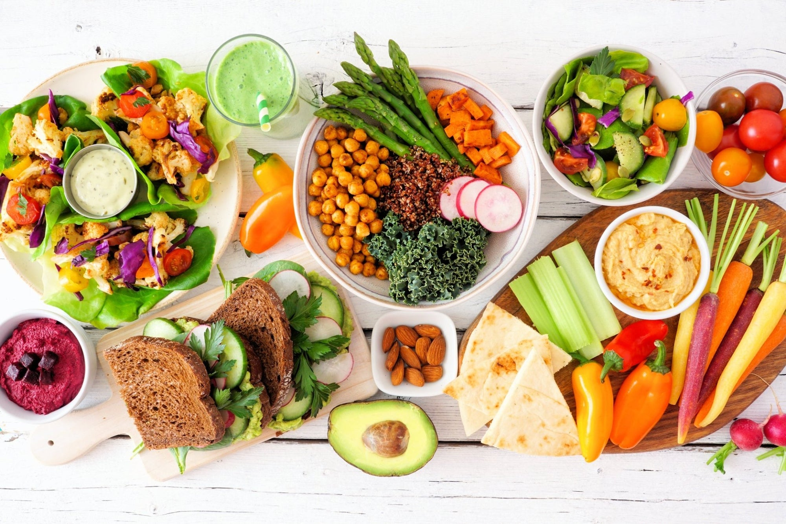
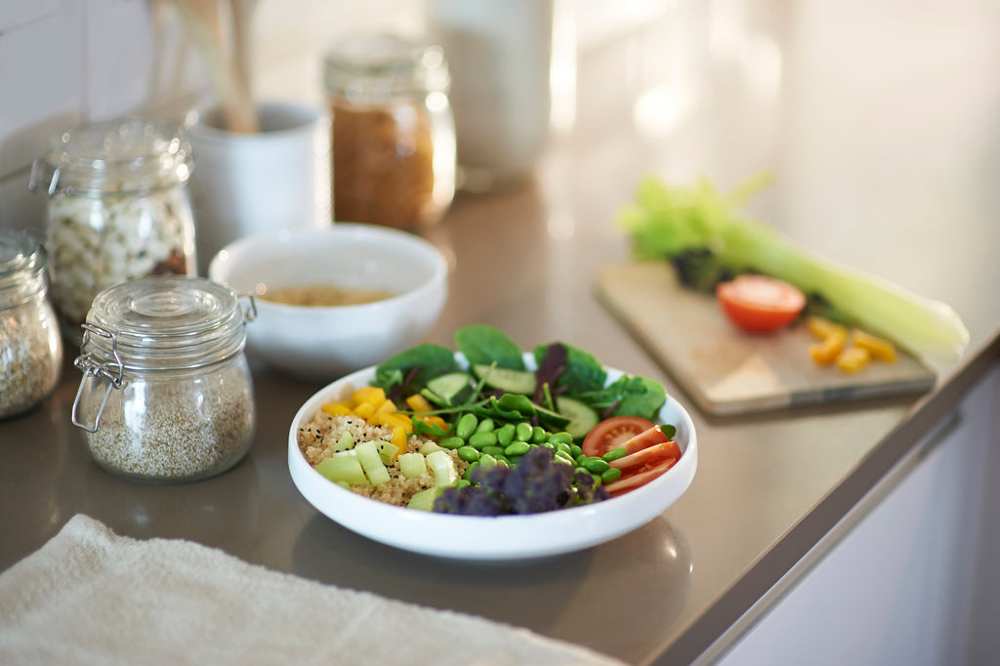
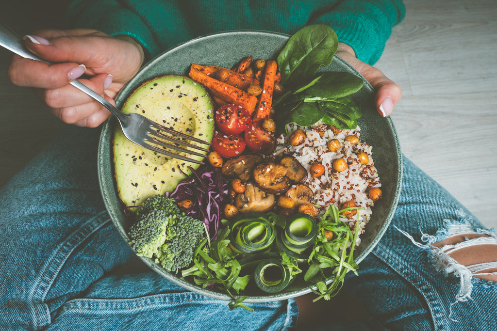

Easy Ways To Transition To a Plant-Based Diet
- by Nature's Path 5 January 2023
There are many benefits of a plant-based diet, both for your physical and mental well-being. The American diet is packed full of fatty, chemical-filled ingredients that deliver only empty calories and disease. In fact, according to the National Health and Nutrition Examination Survey, the typical diet scores an astounding 55.7 to 57.7 out of 100 for nutrition. It's no wonder that so many people suffer from a wide array of health conditions, including high cholesterol and blood pressure, heart disease, diabetes, and more. If you're ready to discover the freedom and health benefits plant-based living offers, follow these tips to help ensure an easy transition!
Take Your Time
Often, when we're excited to try something new, we dive in with both feet, going all out and making drastic changes. When it comes to a lifestyle change like going plant-based, speed is the enemy since it can cause you to become discouraged and give up. Instead, make small changes like swapping one animal-based meal a week for a plant-based alternative. Focusing on adding instead of eliminating will keep you from feeling deprived as your body adjusts to healthier foods and detoxes from the chemicals it's used to eating.
Stock Your Shelves
While the benefits of a plant-based diet are undeniable, it's also true that junk food is addictive. If you have it in the house, you are more likely to make unhealthy decisions, especially when you're hungry. Stocking your shelves with delicious, organic, plant-based food will keep you on track when hunger strikes.
Plan, Plan, Plan
Planning is your new best friend as you transition to a plant-based diet. You can take it a step further and meal prep, so you always have tasty plant-based food ready to go. Taking some time at the start of each week to plan out your meals, shopping list, and snacks will help you avoid turning to fast food after a long day.
Swap Animal Ingredients With Plant-Based Ones
Swapping animal ingredients is an easy way to subtly transition to a plant-based diet. There are many easy-to-incorporate alternatives to the items you use every day that not only taste better but are better for you!
Don't Underestimate The Power Of Volume
When eating healthier, the volume of the food you eat can make all the
difference. Packing your plate full of healthy,
nutrient-dense plant foods will keep you full and satisfied and make the transition away from
animal-based foods easier.
There are so many benefits of a plant-based diet which is why Nature's Path Organic is dedicated
to making the
transition easy and delicious. With one bite of our high-quality organic ingredients, you'll
discover how delicious the
plant-based lifestyle can be. When your health matters, turn to Nature's Path Organic for the
organic alternatives you
crave.